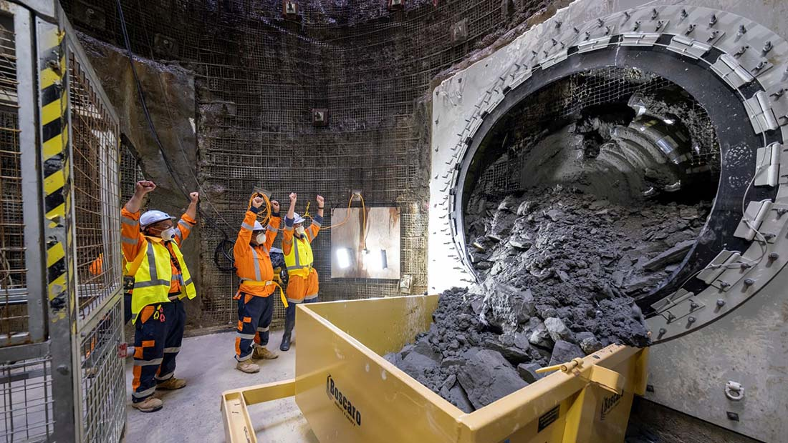

<!-- begin content -->
<div class="">
    <!-- begin content -->
    <div class="content rev" >
        
    
        <div class="">
    
            <section>
                <h1>Not so boring!</h1>    
            	
                <h4>Watercare Central Interceptor Tunnel Project</h4>
				<br>

     
                
            </section>
   
        </div>

	
        <div class="goColumns2">
            <section>
                <p class="justify">
                    Jason Steele and the Shell Lubricants team are supplying specialist Hydraulic oil for Auckland’s Watercare Central Interceptor tunnel boring machines.
                    </p>
                    <p class="justify">
                        The tunnel will run underground from Grey Lynn to the Māngere Wastewater Treatment Plant. Once completed, the tunnel will be 14.7 kilometres in length, the longest bored wastewater tunnel in New Zealand.
                        </p>
                    
    
            </section>
            <section>
                <p class="justify">
                    At 4.5 metres in diameter, it will be high enough to fit a giraffe and wide enough to fit four rhino side by side.</p>

                    <p class="justify">
                        The lubricants team originally supplied lubricants for the micro machine but are now supplying for what Jason calls the “big puppy”. <a href="https://www.watercare.co.nz/Central-interceptor" target="_blank" style="color: #fff;">If you’re keen to see more then check out the Watercare project website here.</a></p>
    
               
            </section>
                    
        </div>

        <picture class="">
            
        </picture>
        
    </div>
</div>